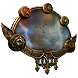
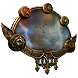

Path of Exile é um RPG de Ação online que se passa no mundo fantástico de Wraeclast. Ele é constituído por uma economia de itens online muito forte, uma profunda personalização de personagens, PvP competitivo e corridas progressivas. O jogo é completamente grátis e nunca será "pay-to-win".
Sistemas de gemas e habilidades
RPGs de Ação foram sempre constituídos de duas coisas: habilidades devastadoras e itens valiosos. Habilidades no Path of Exile são itens - gemas que concedem habilidades quando encaixadas em um equipamento. Uma vasta gama de gemas de auxilio fazem com que o comportamento das habilidades sejam modificados. Você pode ampliar sua Bola de Fogo para ricochetear de inimigo em inimigo ou dividir em múltiplos projéteis incandescentes. Até cinco gemas de auxílio podem afetar uma habilidade de uma vez. Pelo fato de gemas ganharem níveis de forma independente e algumas serem bem difíceis de encontrar, elas podem ser bem valiosas.
árvore de habilidades passivas
Todos as classes do Path of Exile compartilham da mesma vasta árvore de habilidades de passivas. Começando em uma das sete distintas posições ditadas pela classe escolhida, jogadores podem focar nas habilidades principais de cada classe ou viajar através da árvore para construir uma combinação complexa de habilidades composta por várias disciplinas. Espalhados em toda a árvore estão as Pedras Passivas Angulares que alteram drasticamente a jogabilidade do personagem. Técnica Resoluta remove sua habilidade de acertar críticos, mas também impede que inimigos evadam seus ataques. Égide Necromântica transfere as propriedades concedidas por seu escudo a você para seus lacaios. Jóias Fabricadas te permitem modificar dinamicamente a árvore em si, adicionando propriedades personalizadas ou influenciando os efeitos das habilidades próximas.
O mundo de wraeclast
Wraeclast é um continente sombrio e brutal. Aterrorizado por catástrofes misteriosas do passado e habitado por criaturas vindas de pesadelos, o próprio ambiente desafia os exilados que se atrevem a explorá-lo.
Estamos cheios da tendência recente que leva a RPGs cartunescos e brilhantes. O estilo de arte que escolhemos para o Path of Exile é obscuro, realista e grotesco. Wraeclast é aterrorizante e nós tentamos ao máximo fazer com que isso transpareça.
Em Path of Exile, recomeçar é a chave. Todas as áreas, incluindo ao ar livre são instanciadas para seu grupo e geradas aleatoriamente, até mesmo as propriedades mágicas dos mostros que habitam nelas e os tesouros que guardam.

 

Sistema de ítens
Path of Exile é construído completamente ao redor de itens. Todos os sistemas do jogo que puderam ser transformados através de itens com propriedades aleatórias, foram.Nossos frascos são itens persistentes que possuem propriedades. Nossas zonas "end-game" podem ser encontradas na forma de Mapas que possuem propriedades que modificam seus desafios e recompensas. Nós removemos o ouro como moeda e baseamos nossa economia de negociação ao redor de orbes que podem recombinar aleatoriamente as propriedades de outros itens. Nós temos construído nosso sistema de itens cuidadosamente para veteranos dos melhores RPGs de Ação.
Ligas e Eventos
Uma das coisas mais divertidas ao jogar um RPG de Ação online competitivo é participar de corridas. No Path of Exile, nós quisemos capturar esta sensação sem ter que redefinir nossa economia constantemente, então decidimos criar um conjunto de ligas de corridas que são executadas frequentemente em mundos separados com suas próprias economias e rankings.
Em adição as corridas regulares, ligas podem modificar substancialmente as regras do jogo. Em uma liga Ancestral, totens antigos existem juntamente com grupos de monstros, aumentando suas habilidades. Em ligas Turbo, monstros se movem e atacam 60% mais rápido que o normal.
Com sua duração variando de uma hora até vários meses, jogadores podem entrar nestas ligas para demonstrar seu nível de entendimento sobre o jogo e competir para ganhar prêmios valiosos.